Steering Committee
Prasad Mantri
General Co-Chair
TESSOLVE SEMICONDUCTOR PVT LTD
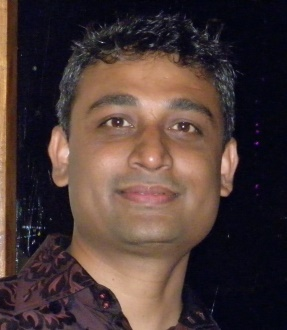
Navin Bishnoi
General Co-Chair
GLOBALFOUNDRIES
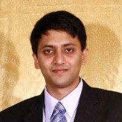
Thryambak Chandilya
Marketing Co-Chair
Mentor Graphics
Venkata Rangam Totakura
Tutorials Co-Chair
Cypress Semiconductor Tech.
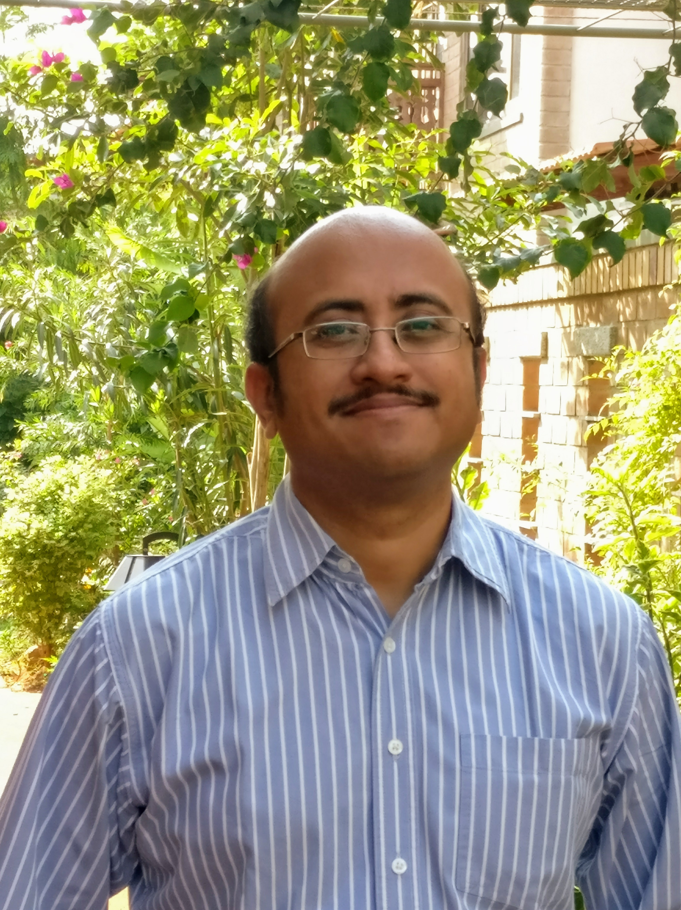
Prakash Narayanan
Tutorials Co-Chair
Texas Instruments
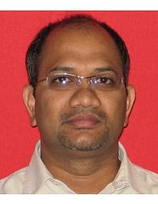
Nagesh Tamarapalli
Technical Program Co-Chair
AMD India Design Center
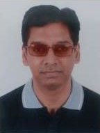
Krishna Rajan
Technical Program Co-Chair
Nvidia Graphics
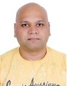
Manu Lakshmanan
Logistics Co-Chair
Cadence Design System, India
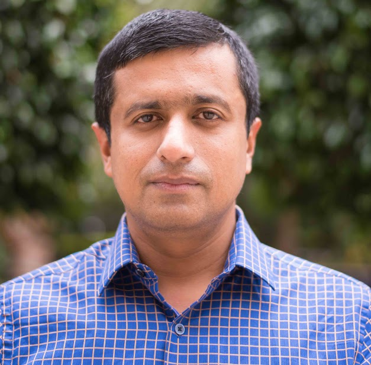
Jyotirmoy Saikia
Logistics Co-Chair
Synopsys
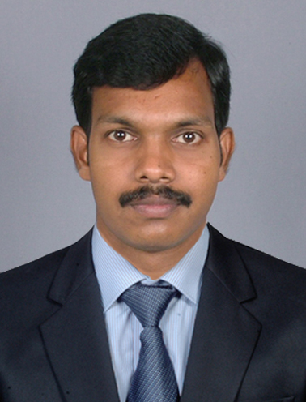
Prof Sivanantham S
Academia Co-Chair
VIT University, Vellore

Prof Virendra Singh
Academia Co-Chair
IIT Mumbai
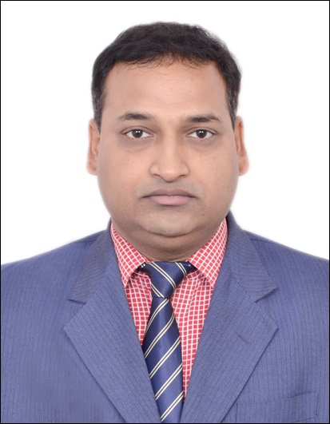
Anurag Gupta
Logistics Co-Chair
ASIC Engg, Sandisk
Rob Knuth
Marketing Co-Chair
Veerappan
Finance Co-Chair
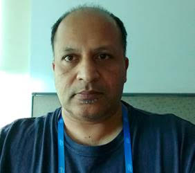
Sridhar Bendi
Intel
Krishnan
Finance Manager
Advisory Committee
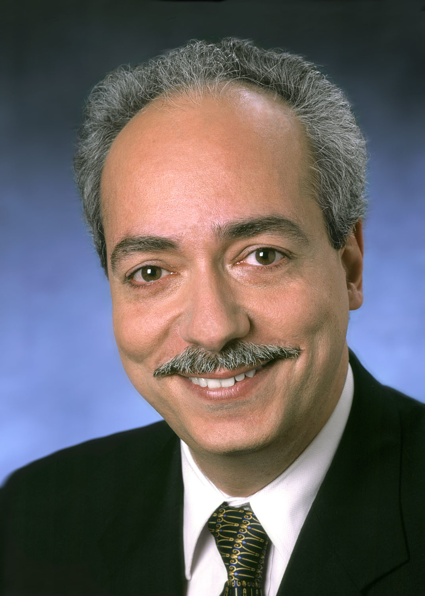
Yervant Zorian
IEEE Fellow, TTTC President
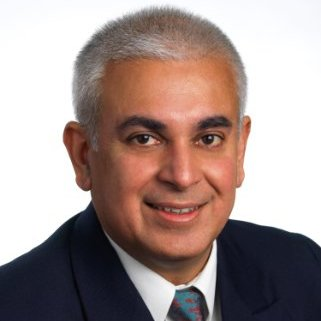
Rohit Kapoor
IEEE Fellow, TTTC 2nd Vice Chair
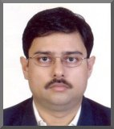
Souvik Mahapatra
IEEE Fellow, IIT Mumbai

Scott Davidson
ITC USA Liaison
Technical Experts Committee
Kamlesh Pandey
Broadcom
Anand Bhat
Intel
Venkatesh Bharathi
ARM
David Khanna
ARM
Nagesh Tamarapalli
AMD
Vineet Srivastava
Intel
Jais Abraham
Intel
Sridhar Bendi
Intel
Sandeep Pendharkar
Intel
Krishna Rajan
Nvidia
Subrangsu Das
Canon
Mohanasundaram Selvam
Mediatek
Srinivas Chinamilli
TESSOLVE SEMICONDUCTOR PVT LTD
Ajay Rasquinha
On Semiconductor
Prasad Prabhu
Open Silicon
Sivanantham S
VIT Vellore
Sudhakar Amireddy
IBM
Pramod
Synopsys
Rubin Parekji
Texas Instruments
Nandakumar krishnan
Cisco
Rajesh Mittal
Texas Instruments
Binoy Maliakal
Texas Instruments
Sridhar Kannan
Texas Instruments
Murali P
Altran
Srijesh P
Mentor
Sundarrajan Subramanian
Qualcomm
Vikram Somaiya
SanDisk
Vikram Kuralla
Invecas
ITC(INDIA)
Contact Details
Organizing Committee, ITC-India 2017 Bangalore, Karnataka India
Email: [email protected]
Park Plaza Bangalore
Outer Ring Rd, Marathahalli Village
Marathahalli, Bengaluru, Karnataka 560037